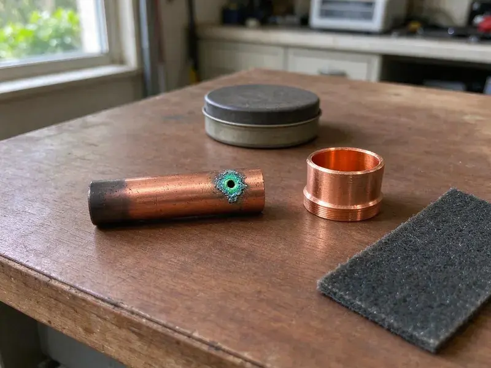

Underground Pipe Repair in Tustin, CA
Facing problems with buried pipes in Tustin, CA? FKM Plumbing provides expert underground pipe repair services to restore your plumbing system.
- Fast Leak Detection
- Expert Diagnostics
- Fast, Local Service
- Foundation Protection

Need Underground Pipe Repair? Call FKM Plumbing in Tustin, CA.
We give you a clear repair price after locating the problem, with no guesswork and no surprises.
Expert Underground Pipe Repair Services in Tustin, CA
At FKM Plumbing, we understand the complexities of underground pipe repair, especially with the soil conditions and older infrastructure found in many Tustin homes. We use advanced diagnostic tools to pinpoint problems without extensive excavation, for a targeted and efficient repair process.
Our expertise includes:
- Code-compliant pipe replacements and fixes.
- Accurate leak detection for buried lines.
- Trenchless repair methods for minimal property disruption.

Additional Plumbing Repair Services in Tustin, CA
We offer expert plumbing repair services across Tustin, CA to fix leaks, restore flow, and keep your system running smoothly.


Customers
Why Choose FKM Plumbing for Underground Pipe Repair in Tustin, CA?
Improper underground pipe repair can compromise your home's foundation and water quality. Trusting FKM Plumbing means your repairs are done right the first time, protecting your property and giving you peace of mind.
- Small Excavations, Precise locating means we dig one small access pit whenever we can.
- Lasting Solutions, We focus on durable repairs and replacement options that withstand the harsh conditions of buried infrastructure.
- Modern Tools, We use modern video inspection cameras and acoustic leak detectors to accurately locate underground pipe issues.
Citywide Coverage
We repair underground pipes in every part of Tustin, including older neighborhoods with galvanized services and newer areas with PEX and PVC. Our team handles both residential lots and larger commercial sites.
Experienced Team
Our team of licensed plumbers has extensive experience with underground pipe repair, particularly with issues common in Tustin homes. They are continuously trained on the latest repair techniques and safety protocols.
Safety-First Approach
We contact 811 before any excavation so gas, electric and communication lines are marked. Our crews hand dig near marked utilities and follow trench safety requirements.
Trusted Certified Tustin Plumbing Services Professionals
At FKM Plumbing, we take pride in providing licensed, certified plumbing services throughout Tustin, CA. Backed by leading industry credentials, our experienced plumbers combine technical skill with genuine customer care. Whether it is repair, installation, or maintenance, we follow strict safety and quality standards to deliver long-lasting results you can trust.
Call Us Now PHCC Plumbing Contractor Recognition
PHCC Plumbing Contractor Recognition Better Business Bureau (BBB) Accreditation
Better Business Bureau (BBB) Accreditation Angi Certified Pro
Angi Certified Pro ISO 9001 Quality Management Certification
ISO 9001 Quality Management CertificationReliable Underground Pipe Repair Services in Tustin, CA
Trenchless Pipe Repair in Tustin
Trenchless pipe repair offers a less invasive alternative to traditional excavation for buried pipe issues. Methods like pipe bursting or pipe lining allow us to repair or replace damaged pipes with minimal digging, protecting your landscaping, driveways and foundations in Tustin. This approach saves time and reduces restoration costs, making it a great fit for many homeowners.

Pool and Outbuilding Supply Line Repair in Tustin, CA
Many properties have buried water lines feeding a pool auto-fill, a guest house, an outdoor kitchen or a detached garage. These lines are usually longer than the main service and harder to locate. We use tracer wire and acoustic equipment to find leaks along the full run. Repairs are made with direct-bury rated pipe and tested before we close up.
Storm Drain and Lateral Repair in Tustin, CA
Underground storm drains and laterals are crucial for managing rainwater runoff and preventing flooding around your property. Damage to these pipes can lead to water pooling, erosion and foundation issues. We inspect, clear and repair damaged storm drainage systems, restoring proper water diversion and protecting your landscape and structures in Tustin, CA from water damage.
Commercial Underground Pipe Repair in Tustin
Businesses in Tustin rely on robust plumbing infrastructure, and underground pipe issues can severely impact operations. FKM Plumbing offers specialized commercial underground pipe repair services, handling larger diameter pipes and more complex systems. We work efficiently to minimize downtime and keep your commercial property's plumbing working properly.
Sewer Line Repair in Tustin
Sewer line damage underground can show up as foul odors, slow drains or soggy spots in your yard. We diagnose breaks, blockages or collapses in your main sewer line using HD camera inspections. Our repairs range from targeted patch repairs to full line replacement, often using trenchless methods to minimize disruption to your landscaping and concrete in Tustin.
Underground Pipe Repair Cost Comparison in Tustin, CA
A single point repair on a shallow water line is the most economical option. Pipe bursting or pulling a new line through the old path costs more but avoids open trenching and long-term risk. Full trench replacement is sometimes needed when the old route is blocked or the pipe is too damaged. We explain each method and its cost so you can choose the best option.
Pipe Bursting Services in Tustin, CA
Pipe bursting is a trenchless technique where a new pipe is pulled through the path of the old, broken pipe, fracturing the old pipe outward at the same time. This method is very effective for complete pipe replacement, creating a new, durable pipe of the same or larger diameter. It's a solid solution for severely damaged or collapsed sewer and water lines, offering a long-term fix in Tustin, CA.

Underground Storm Drain Repair in Tustin, CA
Clogged or damaged underground storm drains can lead to serious flooding and foundation issues, especially during heavy rain. Tree roots invade sewer lines during dry months, so the first big rain of the season often exposes a cracked or blocked lateral. FKM Plumbing focuses on repairing and clearing these vital drainage systems. We address blockages, cracks and disconnections to restore proper water runoff and protect your Tustin property.
Underground Pipe Repair Near Me in Tustin, CA
When you search for "underground pipe repair near me" in Tustin, CA, FKM Plumbing is your trusted local choice. We understand the plumbing infrastructure challenges in our area, including the impact of soil movement and changing temperatures on buried pipes. Our local base means faster response times and technicians who are familiar with local conditions.
Our location allows us to respond quickly to your underground pipe repair needs across Tustin, providing timely and effective solutions. You can count on FKM Plumbing for reliable service that addresses your underground plumbing issues with local knowledge and experience.
FKM Plumbing at a Glance
- Fully licensed plumbing team covering Tustin, CA
- Same-day appointments and 24/7 emergency response
- Upfront, flat-rate pricing before work begins
- 4.8-star rated by 754+ Southern California customers
Tustin Map
Tustin Information
- Population
- 77,704
- Area codes
- 714/949/657
- Service area
- Tustin and communities within 40 miles
- Nearby
- Santa Ana, Irvine, Orange, Costa Mesa
Underground pipe condition is crucial for homes in Tustin, CA, where soil movement and heavy rain can put pressure on buried plumbing. A warm, dry climate is the main factor for plumbing in Southern California, with long irrigation seasons and year-round demand on outdoor lines.
Expert Services
Trust our professionals for reliable FKM Plumbing solutions in Tustin, CA.
Our Specialized Plumbing Services in Tustin, CA
At FKM Plumbing, we provide a complete range of plumbing services across Tustin, CA. From leak detection to full system installations, our team ensures fast, precise, and affordable service for both residential and commercial properties. Explore our core services below:


How Our Underground Pipe Repair Process Works in Tustin, CA
Here is how we take your underground pipe from leaking to repaired.
Request a Quote
Call (213) 871-0701 and let us know what you are seeing, such as a wet yard, a high bill or low pressure. We will schedule a locating visit promptly.
Locate the Leak
We use acoustic, electronic and camera equipment to pinpoint the damaged section. Then we mark it and give you a written repair price.
Repair and Restore
We excavate, repair the pipe with approved materials and pressure test the line. Then we backfill, compact and clean up the work site.
Frequently Asked Questions About Underground Pipe Repair in Tustin
The cost of underground pipe repair in Tustin, CA can vary a lot, typically ranging from $500 for minor spot repairs to $3,000 to $10,000 or more for trenchless full line replacements, or even more for extensive excavation and re-piping. Factors include the pipe material, depth, length of the damaged section, the repair method chosen and the extent of property restoration needed. We provide transparent, upfront pricing after a thorough diagnosis.
For water lines we typically use PEX or Type K copper, both approved for direct burial. For sewer lines we use Schedule 40 PVC. The right choice depends on the existing pipe and local code.
Yes, FKM Plumbing stands behind our work with solid warranties on all underground pipe repairs. The warranty period may vary depending on the type of repair and materials used, but we are committed to your long-term peace of mind.
In most cities, the homeowner owns and maintains the water line from the meter to the house. The utility is usually responsible for the meter and the line on the street side. We can help confirm which side the leak is on.
FKM Plumbing is equipped to repair a wide range of underground pipe materials, including PVC, ABS, cast iron, copper, PEX and even older materials like clay or polybutylene. Our technicians are trained on the right repair techniques for each material.
Absolutely, tree roots are a very common cause of underground pipe damage, particularly in older, porous pipes or those with existing cracks. Roots seek out water sources and can work into pipes, growing inside them and causing blockages or eventually fracturing the pipe. This is a common issue in many established Tustin neighborhoods.
Shallow irrigation leaks are sometimes a manageable DIY repair. Main water lines and sewer laterals require locating, utility marking and code-compliant fittings, so a licensed plumber is the safer choice.
Common signs include a water bill that jumps without explanation, a meter that moves with all water off, low pressure and wet or sinking spots in the yard. A hissing sound near the meter box can also point to a leak.
What People Are Saying About Our Plumbing Experts?

Mark T.
When our office needed drain cleaning, FKM Plumbing provided quick, reliable service. The plumber arrived on time and made sure every drain flowed perfectly before leaving. Very satisfied.
Drain Cleaning · Garden Grove, CA
James P.
Our commercial plumbing system had a leak under the sink, and FKM Plumbing handled it professionally. The plumbers arrived quickly and restored everything without disruption to our customers.
Commercial Plumbing · Orange, CA
Laura S.
I scheduled a water heater replacement, and the team made the process smooth and affordable. The new unit works perfectly, and they cleaned up after completing the job.
Water Heater Replacement · Costa Mesa, CA
Daniel K.
A pipe burst at 11 pm and they actually answered. The plumber showed up within the hour, shut everything down, and had us back to normal the next morning. Could not ask for more.
Emergency Plumbing · Anaheim, CASofia M.
Two new toilets installed in one visit, no mess left behind, and the tech even adjusted a faucet he noticed was dripping. Fair pricing and really friendly.
Toilet Installation · Garden Grove, CARobert G.
The trenchless sewer replacement saved our front yard. They walked us through the camera inspection footage first so we knew exactly what we were paying for.
Sewer Line Replacement · Orange, CA